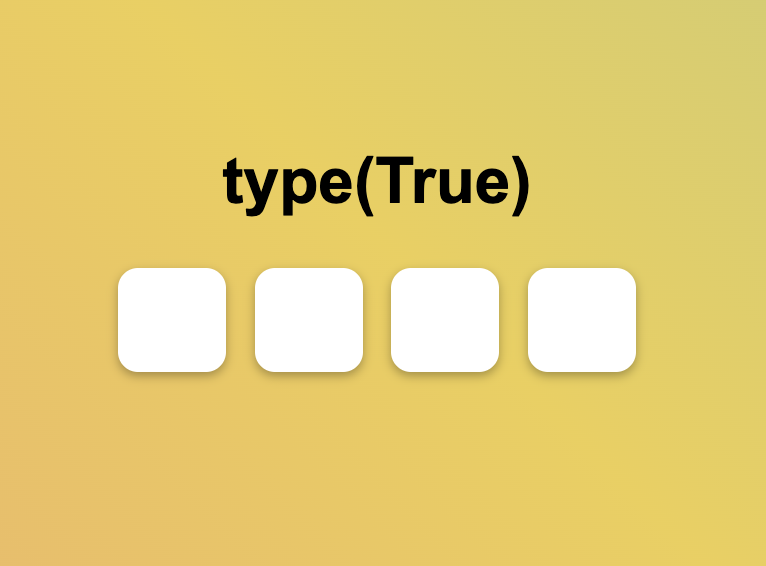

Шилдт Уолтер SQL
12 января 2025
Таблица - это?
двухмерная сетка, состоящая из строк и столбцов
Что относится к данным?
имена числа даты символы

Что содержат все базы?
метаданные
Что такое метаданные?
описывают структуру и форматирование
Роль базы данных?
упростить взаимодействие, организацию и анализ связанных данных
13 января 2025
Как называются строки?
записи или кортежи
Как называются столбцы?
поля или атрибуты
Реляционная база данных?
множество таблиц
Что обязательно содержит таблица?
первичный ключ
Каким должен быть ключ?
не пустым и уникальным
Внешний ключ?
соответствует первичному ключу
Связи между таблицами?
один-к-одному, один-ко-многим, многие-ко-многим

parentId?
соответствует первичному ключу parent_info и внешний ключ для lab_orders

Числовые типы данных?
целые и с плавающей точкой
Символьные типы данных?
CHAR, VARCHAR, TEXT
Типы данных даты и времени?
DATE, TIME, DATETIME, TIMESTAMP
Что такое SQL?
Structured Query Language — язык структурированных запросов
Основные подмножества SQL?
DDL (Data Definition Language), DML (Data Manipulation Language), DCL (Data Control Language)
Команды DDL?
CREATE, ALTER, DROP, TRUNCATE
Команды DML?
SELECT, INSERT, UPDATE, DELETE
Создание таблицы?
CREATE TABLE table_name (column1 datatype, column2 datatype, ...);
Выборка всех данных из таблицы?
SELECT * FROM table_name;
Выборка конкретных столбцов?
SELECT column1, column2 FROM table_name;
Фильтрация строк с WHERE?
SELECT * FROM table_name WHERE condition;
Операторы сравнения в WHERE?
=, <>, <, >, <=, >=, BETWEEN, LIKE, IN
Сортировка результатов?
ORDER BY column1 [ASC|DESC], column2 [ASC|DESC];
Ограничение числа строк?
LIMIT number; (или TOP в некоторых СУБД)
Агрегатные функции?
COUNT(), SUM(), AVG(), MIN(), MAX()
Группировка данных?
GROUP BY column1, column2;
Фильтрация групп?
HAVING condition;
Разница между WHERE и HAVING?
WHERE фильтрует строки, HAVING фильтрует группы
Добавление записей?
INSERT INTO table_name (column1, column2) VALUES (value1, value2);
Обновление записей?
UPDATE table_name SET column1 = value1 WHERE condition;
Удаление записей?
DELETE FROM table_name WHERE condition;
Очистка таблицы?
TRUNCATE TABLE table_name;
Удаление таблицы?
DROP TABLE table_name;
Изменение структуры таблицы?
ALTER TABLE table_name ADD column_name datatype;
Типы соединений (JOIN)?
INNER JOIN, LEFT JOIN, RIGHT JOIN, FULL OUTER JOIN, CROSS JOIN
INNER JOIN?
Возвращает строки, где есть соответствие в обеих таблицах
LEFT JOIN?
Все строки из левой таблицы + совпадения из правой
Подзапросы?
Запрос внутри другого запроса
Виды подзапросов?
В SELECT, FROM, WHERE, с IN, EXISTS, ANY, ALL
Оконные функции?
ROW_NUMBER(), RANK(), DENSE_RANK(), SUM() OVER()
Представления (VIEW)?
Виртуальная таблица на основе результата SELECT
Создание представления?
CREATE VIEW view_name AS SELECT ...;
Индексы?
Ускоряют поиск данных, но замедляют вставку/обновление
Транзакции?
Группа операций, выполняемая как единое целое (ACID)
ACID?
Atomicity, Consistency, Isolation, Durability
Нормализация базы данных?
Процесс организации данных для уменьшения избыточности
Первая нормальная форма (1NF)?
Каждое поле содержит только атомарные значения, нет повторяющихся групп
Вторая нормальная форма (2NF)?
1NF + все неключевые атрибуты зависят от всего первичного ключа
Третья нормальная форма (3NF)?
2NF + нет транзитивных зависимостей
Что такое NULL?
Специальное значение, означающее отсутствие данных
Работа с NULL?
IS NULL, IS NOT NULL, COALESCE(), NULLIF()
Объединение результатов?
UNION, UNION ALL, INTERSECT, EXCEPT
Хранимые процедуры?
Предварительно скомпилированный код SQL, хранящийся в БД
Триггеры?
Код, автоматически выполняемый при определенных событиях